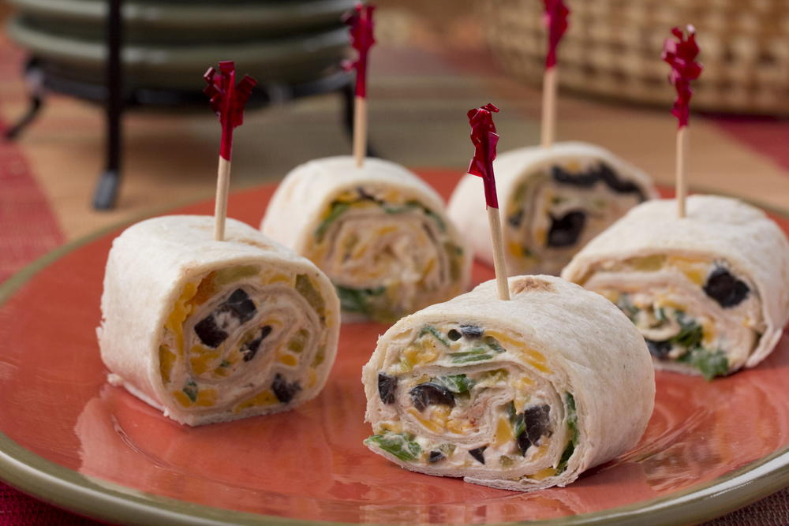

Mexican Pinwheels

Description
These Mexican pinwheel appetizers feature chicken, cream cheese, and Cheddar.
They are fast to assemble and loaded with Mexican flavors! The heat will sneak up on you, but it's tempered by the cool cream cheese.
Ingredients
- 1/2 cup cream cheese, softened
- 1/2 cup sour cream
- 2 teaspoons smoked paprika
- 1 teaspoon onion powder
- 1 teaspoon garlic powder
- 1 pinch Aleppo pepper
- 5 sundried tomato tortilla wraps
- 1/2 cup diced tomatoes with green chilies (such as RO*TEL® Tomatoes and Green Chilies), drained
- 8 ounces Cheddar cheese, shredded
- 8 ounces grilled chicken breast strips
- 1/2 cup guacamole, or as needed (optional)
Steps
- Blend cream cheese, sour cream, smoked paprika, onion powder, and Aleppo pepper together in a small bowl.
- Lay tortillas out on a cutting board. Spread cream cheese mixture evenly over tortillas.
Divide RO*TEL, Cheddar cheese, chicken strips, and guacamole evenly among tortillas.
- Roll up pinwheels tightly. Refrigerate for 4 hours. Cut into 1-inch rounds. Enjoy!